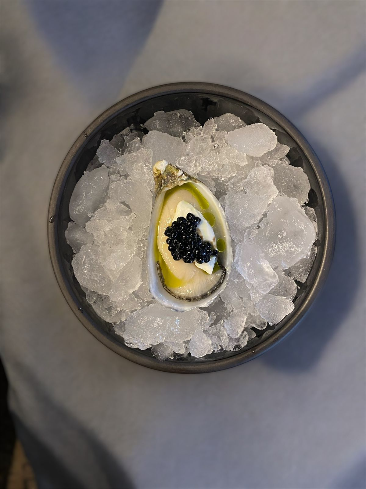
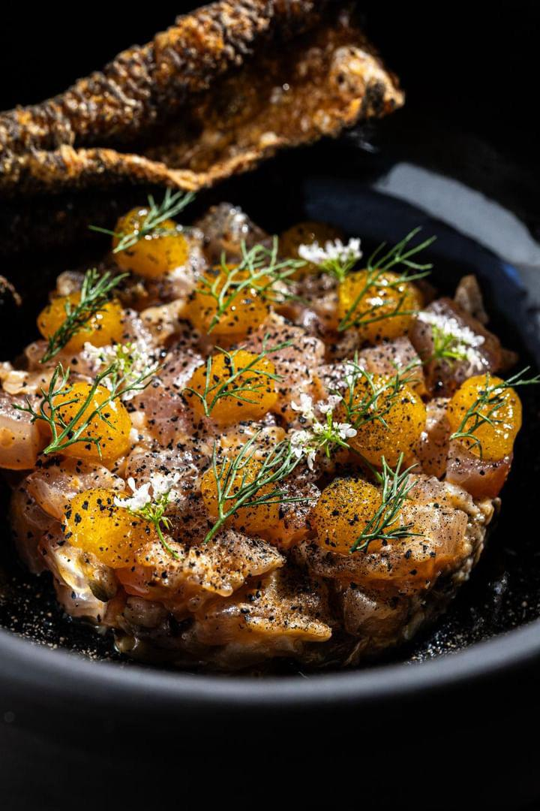
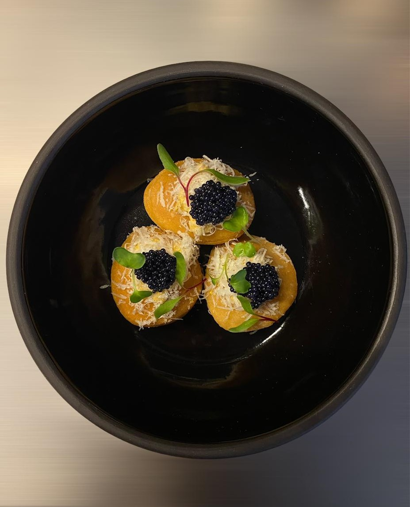
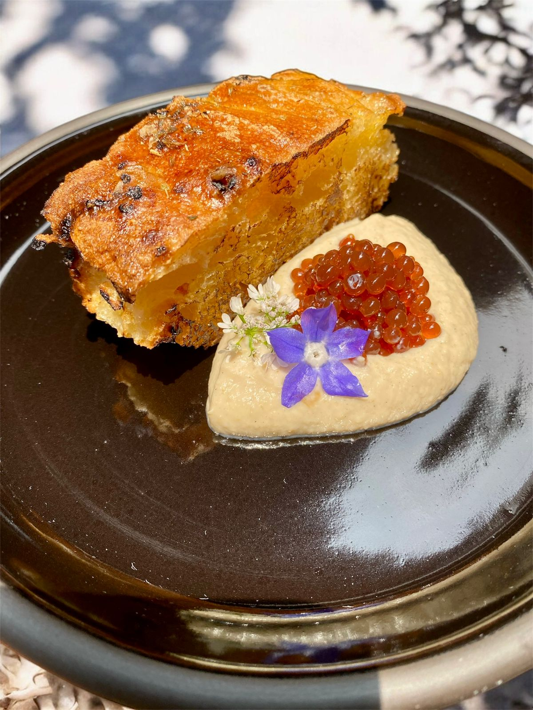
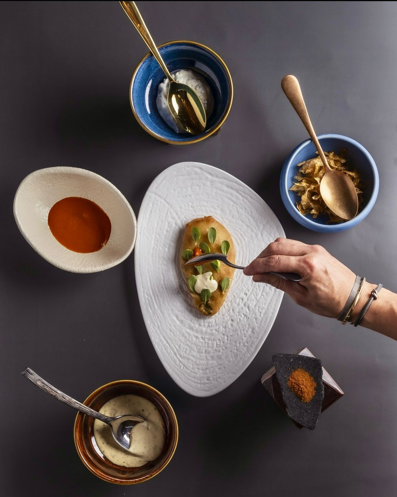
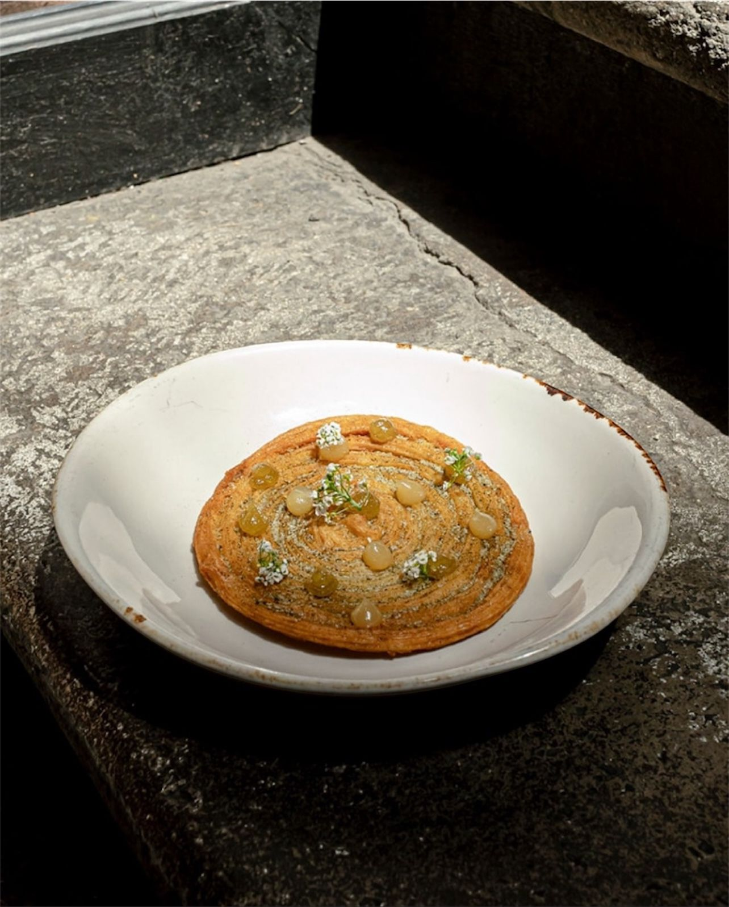
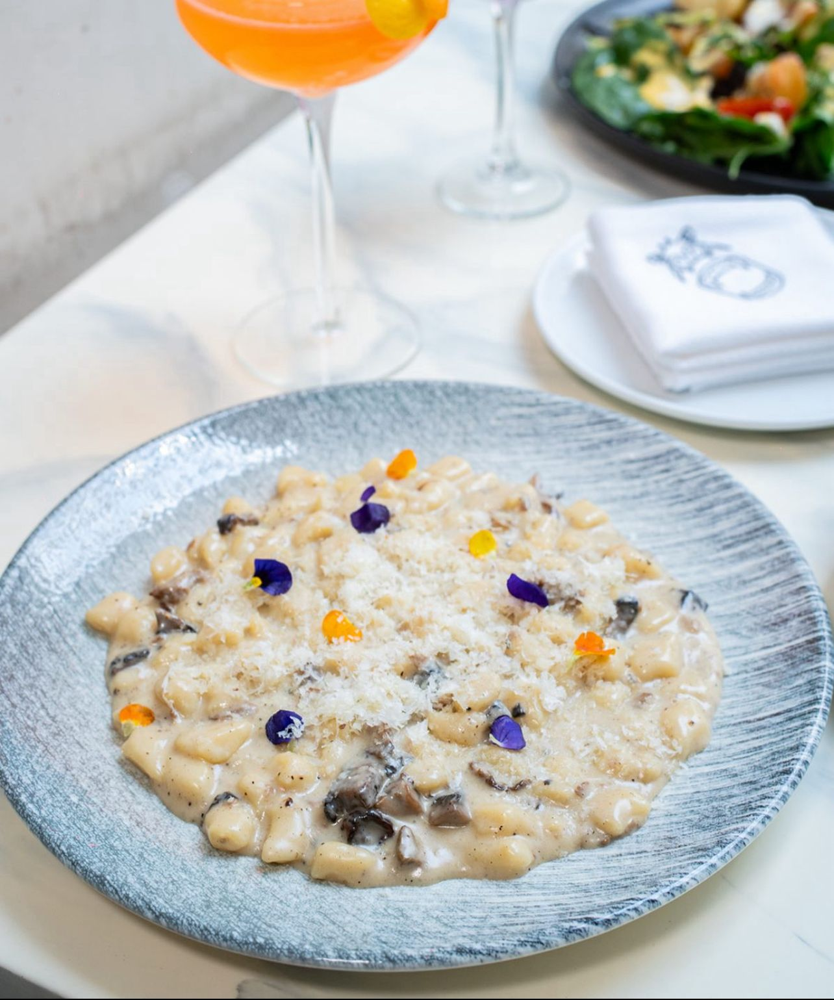
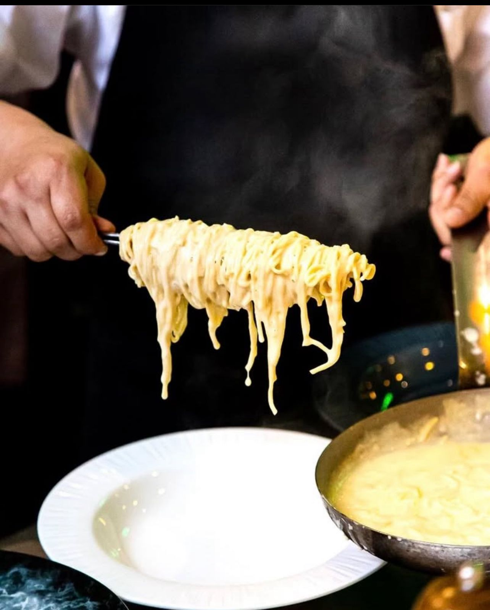

Culinary Philosophy
"Transforming tradition through innovation"
Where Mexican tradition meets Mediterranean technique. I believe in honoring heritage while embracing innovation—transforming humble ingredients through molecular gastronomy and zero-waste practices. Every dish tells a story of culture, creativity, and craft.
Culinary Creations








The Artist at Work
In the crucible of professional kitchens, true artistry emerges through the marriage of technical precision and creative vision. Each service represents an opportunity to push boundaries, refine techniques, and create moments of culinary transcendence. From the careful selection of ingredients at dawn markets to the final flourish of microgreens, every gesture is intentional, every decision purposeful. This is where passion meets profession, where tradition embraces innovation, and where the next generation of gastronomy is being written, one plate at a time.
Let's Create Excellence Together
Available for Premium Culinary Opportunities Worldwide